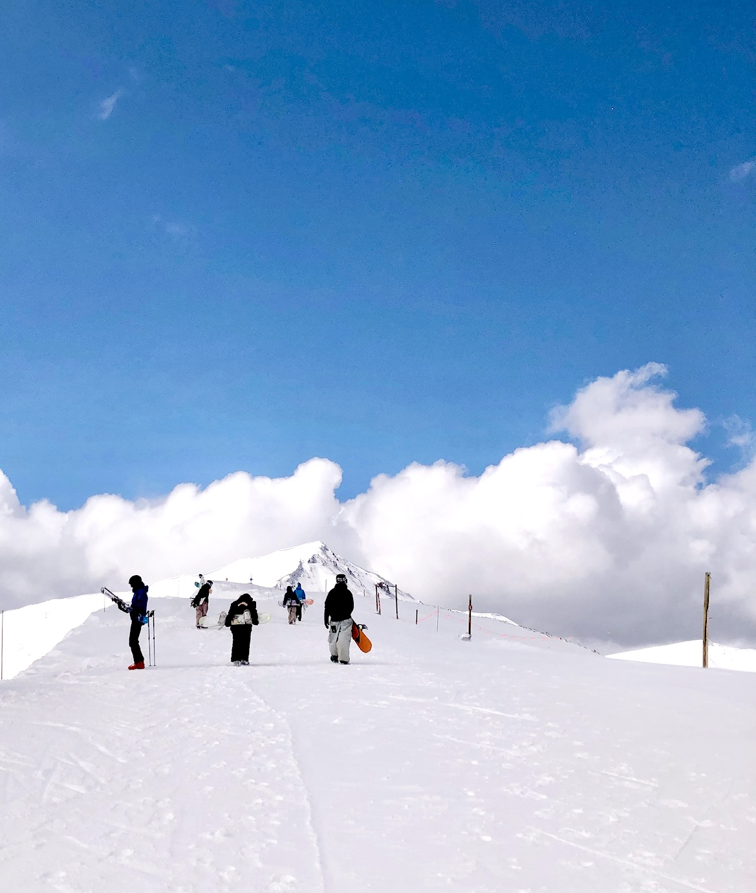
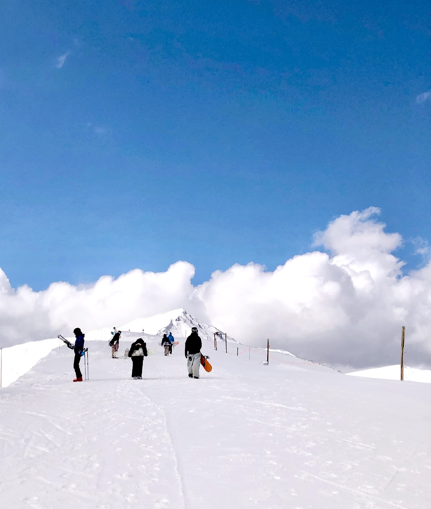
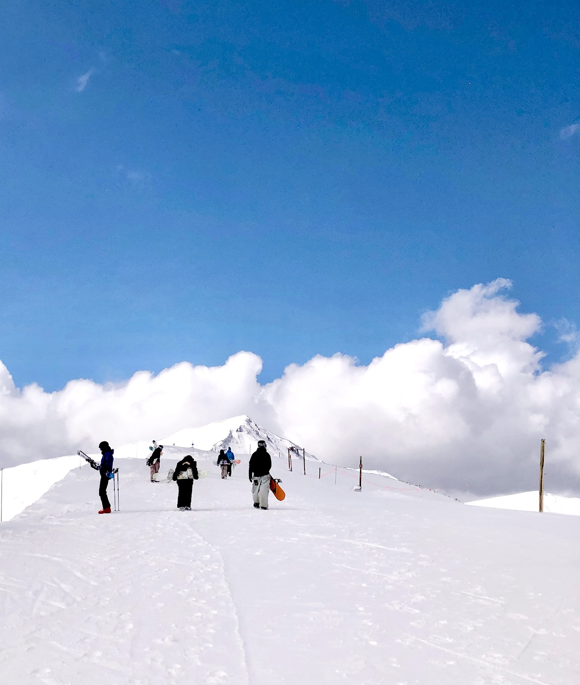

Backcounty Snowboarding is one of the more niche parts of snowboarding. It requires a lot of specialized gear. Including:
Backcountry is the definition of earning your turns. There are no lifts to get you up the mountain so you must hike up. However this means you can get fresh tracks and wonderful pow fields. The terrain can also provide the perfect setting to build large jumps. The fresh untouched snow can be very dangerous. Having some form of avalanche training is recommended so you don't end up burried.
